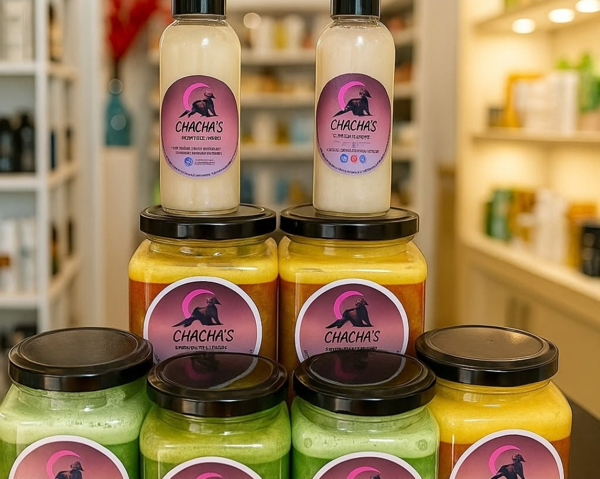
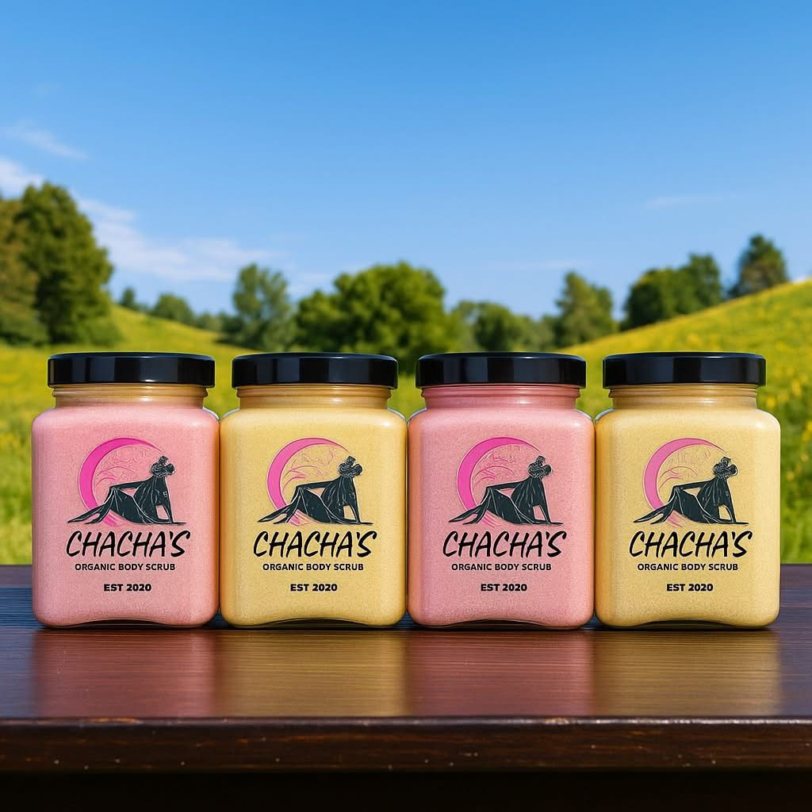
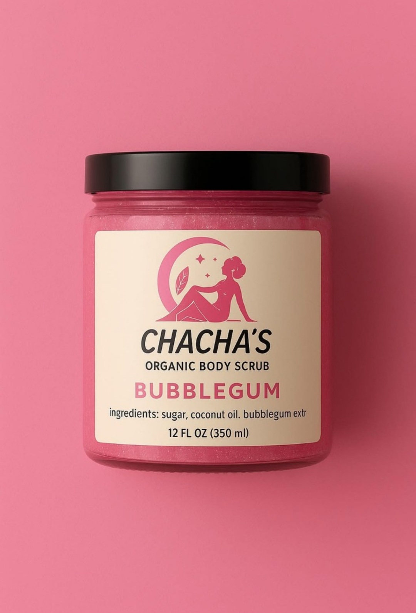
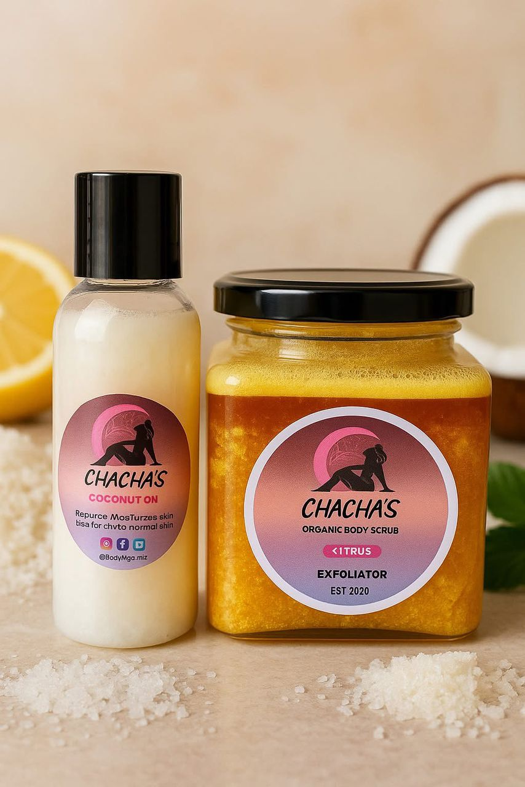
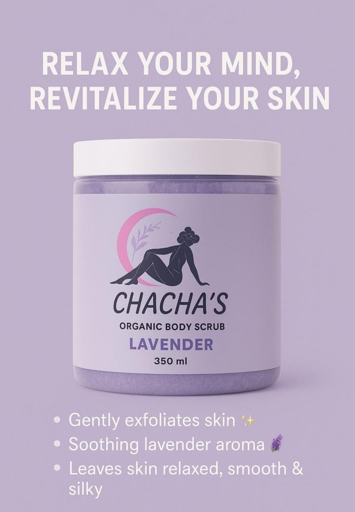
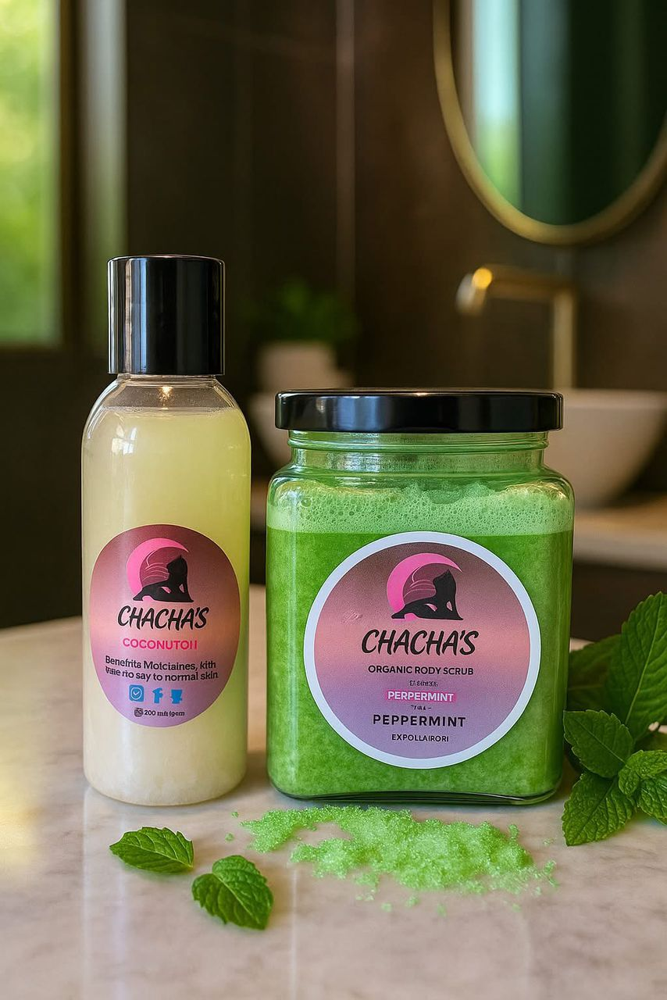
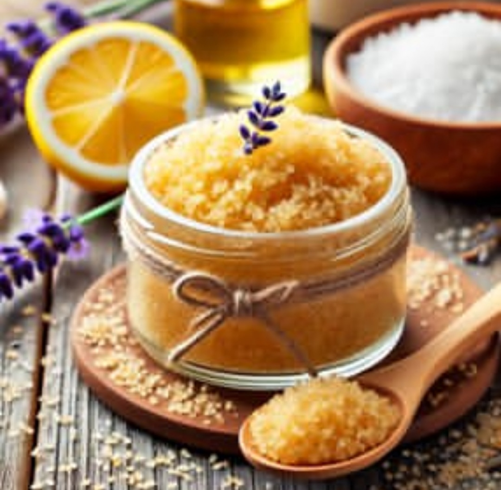
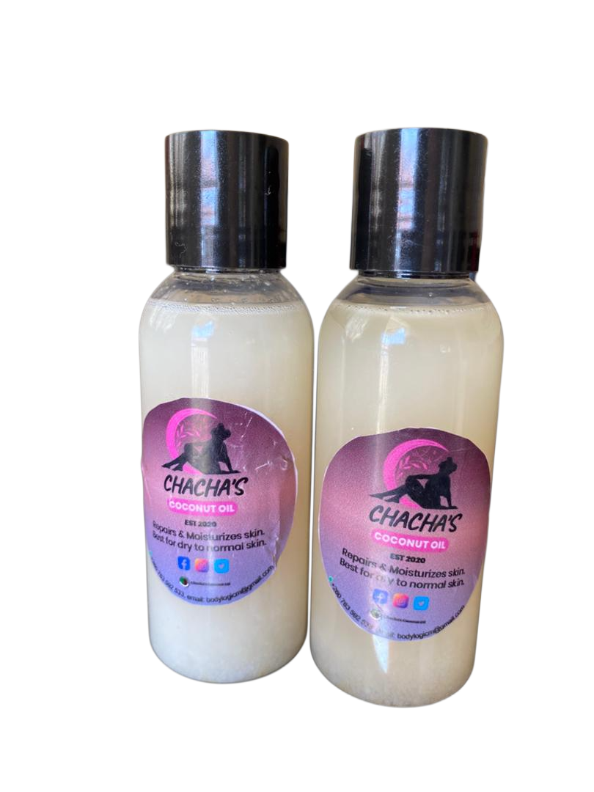
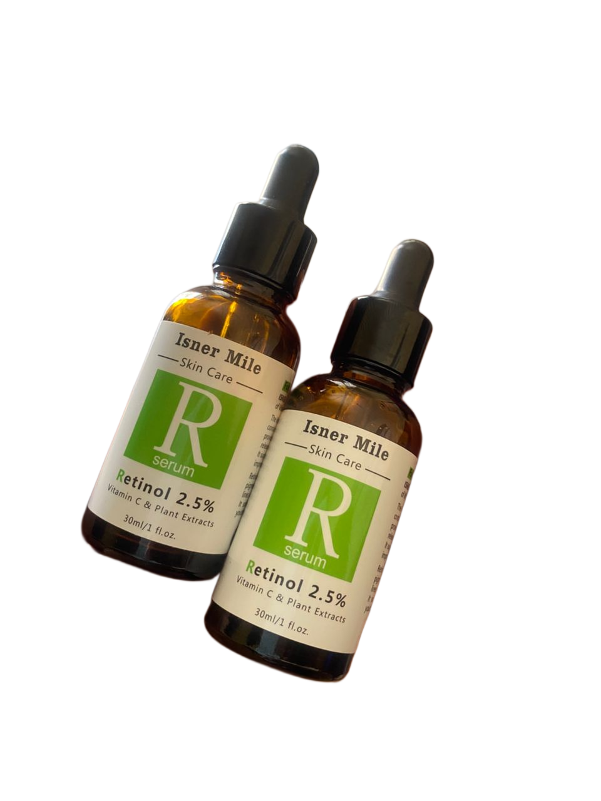

Soft, smooth, chemical-free, and kind to your skin
and the earth for a naturally nourished,
refreshed, glowing you
Check Our Organic Products
1 / 10

2 / 10

Refresh your soul and revitalize your skin
With Chacha's Organic Body Scrub.
With Chacha's Organic Body Scrub.
3 / 10

A fun, sweet-scented exfoliating scrub that
gently removes dead skin cells,
leaving your skin smooth, fresh, and glowing.
gently removes dead skin cells,
leaving your skin smooth, fresh, and glowing.
4 / 10

While the Scrub exfoliates and renews your skin, the
coconut oil seals in moisture giving you smooth, hydrated,
and beautifully scented skin in one simple routine.
coconut oil seals in moisture giving you smooth, hydrated,
and beautifully scented skin in one simple routine.
5 / 10

A bright citrus exfoliator that gently removes
dead skin, smooths texture, and boosts your natural
radiance. Leaves the skin feeling soft and refreshed.
dead skin, smooths texture, and boosts your natural
radiance. Leaves the skin feeling soft and refreshed.
6 / 10

A calming lavender scrub that delicately exfoliates,
smooths the skin, and enhances skin’s natural radiance.
Leaves your body feeling soft, balanced, and restored
smooths the skin, and enhances skin’s natural radiance.
Leaves your body feeling soft, balanced, and restored
7 / 10

A refreshing peppermint scrub that gently exfoliates,
smooths the skin, and enhances your natural glow.
Leaves your body feeling soft, fresh, and revitalized.
smooths the skin, and enhances your natural glow.
Leaves your body feeling soft, fresh, and revitalized.
8 / 10

Scrub, relax, and shine gently exfoliate,
refresh your skin, and let your
natural glow shine through.
refresh your skin, and let your
natural glow shine through.
9 / 10

Carefully sourced and minimally processed
to deliver the pure benefits
of organic coconut oil.
to deliver the pure benefits
of organic coconut oil.
10 / 10

This retinol serum works effectively with
vitamin C and plant extracts to improve
skin tone, texture, and radiance.
vitamin C and plant extracts to improve
skin tone, texture, and radiance.